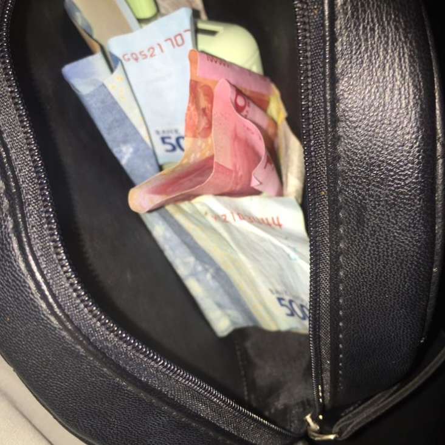
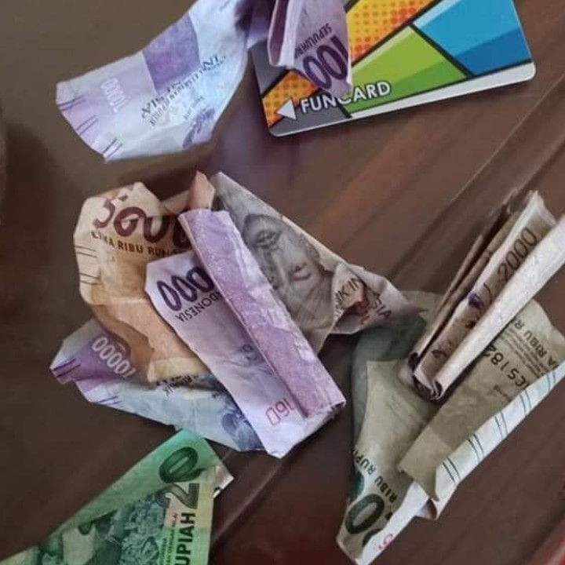

Mari Merawat Rupiah
Bank Indonesia sering mengampanyekan agar uang dijaga, kampanye yang sering dilalukan adalah CBP (Cinta, Bangga, Paham) Rupiah dan merawat uang rupiah termasuk Cinta Terhadap Rupiah. Rupiah yang selalu dilipat dan dikusutkan akan membuat uang yang semulanya rapi, bersih dan tahan lama menjadi uang yang lusuh dan cepat rusak.
Maka dari itu untuk dalam kampanye Bank Indonssia yaitu CBP menyarankan penggunaan dompet lurus agar uang rupiah tetap dalam keadaan aslinya. Namun saat ini masyarakat Indonesia mayoritas menggunakan dompet lipat, apakah itu boleh dilakukan?. Sebenarnya selama uang rupiah tidak terlipat hingga membentuk garis permanen, penggunaan dompet lipat tidak dipermasalahkan, yang ditakutkan jika menggunakan dompet lipat adalah jika dompet lipat tertekan yang membuat uang rupiah nya ikut tertekan hingga terlipat. Maka dari itu dompet lurus lebih disarankan karena uang tetap lurus.
Contoh Tidak Menjaga Rupiah

Rupiah terlipat dalam dompet

Asal Menyimpan Rupiah

Menyimpan Rupiah Dalam Saku
Tentang Kami
X-D merupakan kelas yang berisi siswa-siswa kreatif,inovatif dan kritis. Kelas X-D termasuk kelas yang tergolong sangat baik, bahkan memiliki solidaritas tinggi terhadap sesama
>